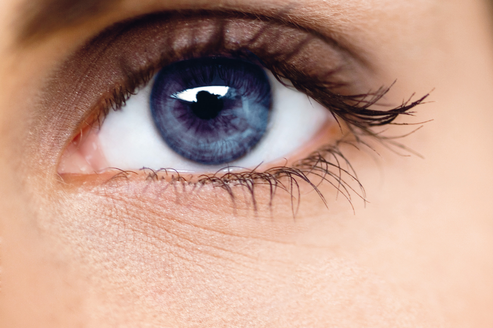

10 Exercises to Improve Your Eyesight | Healing The Eye
2020.12.07 12:35
800-430-9328 info@healingtheeye.com Blog Glaucoma Cataracts Macular Degeneration Eye Health Research Home About Reviews Products Vitamins Brain and Memory Cataracts Detox Dry Eyes Glaucoma Macular Degeneration Services Cataracts Treatment Glaucoma Treatment Macular Degeneration Treatment Microcurrent Stimulation Programs Scientific Studies Eye and Vision Program Integrative Doctors Save your Brain and Memory! Get Started with Microcurrent Consultations Continued Care Program Monthly Coaching Webinars! Resources Blog Webinars Books & CDs Healthy Vision Talk Radio Past Articles Past Radio Broadcasts Scientific Studies Contact Select Page
10 Exercises to Improve Your Eyesight
by Dr. Kondrot | May 18, 2018 | Eye Health , Eye Health Tips | 0 comments
One of the best ways to maintain your vision is by doing exercises to improve your eyesight. Wondering if eye exercises really do improve eyesight? Yes, these are actually natural ways to improve vision because they act like vision training exercises. Try these simple eye exercises to increase blood circulation, relax your eyes, and improve your overall vision.
Simple Exercises to Improve Your Eyesight by Healing the Eye
1. Strengthen Your Eyes’ Near and Far Focusing
Focus on an object 5-10 feet away for 10-15 seconds. Repeat this exercise 5 times. Make sure you’re sitting down while doing this exercise to better help you relax. To improve this exercise, keep shifting your vision between a far object to a close one throughout the exercises.
2. Move Your Eyeballs Up and Down
Close your eyes then move your eyeballs up and down. You can repeat this exercise 5-10 times. Do this exercise slowly all throughout. Make sure your eyelids are relaxed while moving your eyeballs.
3. Exercise Your Gaze
Draw a geometric figure with your gaze while keeping your eyes open. Start with simple shapes like a circle, square, triangle, and rectangle. Then you can move on to complicated shapes such as a trapezium.
4. Press your Temples
Push against your temples with your fingers for about 2 seconds and repeat this exercise 5 times. This exercise helps boost the flow of intraocular fluid in your eyes.
5. Close and Open Your Eyes
Close your eyes for 3-5 seconds then open them. Repeat this exercise 7 times daily. This particular exercise relaxes your eyes. At the same time, it also helps regulate the blood circulation around them.
6. Move Your Gaze in Different Directions
For 5 seconds, look up, then down, right and left; or in a circular motion. In this exercise, all aspects of your visual perception, including your peripherals, are maintained. It’s also the best exercise for people who are nearsighted or farsighted.
7. Close Your Eyes
Close and relax your eyes for 30 seconds. This is the simplest way to give your eyes a break and relax them. The important tip in this exercise is keeping your eyelids relaxed as well.
8. Look to Your Right and Left
Look to your right while inhaling then your left while exhaling for 30-60 seconds. As much as possible, do this exercise in a relaxed state. The best way to do this is by turning towards each direction slowly. After the exercise, close your eyes for a second.
9. Stare and Turn Your Head
Turn your head right to left while staring ahead for 30-60 seconds. You can also turn your head up and down. This particular exercise increases blood circulation around your eyes. Make sure to finish in a calm manner.
10. Blink for A Minute
Open and close your eyelids quickly for 30-60 seconds. This eye exercise improves blood circulation inside your eyes. It also helps clean your eyes by greasing them and lets your eyes relax by taking them away from light exposure.
Watch this video for 5 more eye exercises you should try:
Eye exercises are not daily activities most people do. But they are one of the most natural ways to maintain your vision and eye health . These simple exercises to improve your eyesight will take less than 10 minutes to do. So give these eye exercises a try today!
Have you tried any of these eye exercises to improve your eyesight? How do you maintain your vision? Share your thoughts and experience with us in the comments section below!
Up Next: The Importance Of Getting An Eye Vision Test Frequently
5 (100%) 1 vote
Like this:
Like Loading...Leave a Reply Cancel reply
This site uses Akismet to reduce spam. Learn how your comment data is processed .
Follow Us
FREE Monthly Vision Guide!
Keep up to date on the latest advances and research in alternative treatments of eye disease.
Sign up to receive your Guide.
Popular Articles
Using Medical Marijuana For Glaucoma Treatment
Are Cataracts Always Visible?
Signs Of Glaucoma and How to Prevent It
Healthy Food For Healthy Eyes
Healing The Eye & Wellness Center
800.430.9328 info@healingtheeye.com
Policy
Privacy Policy
Terms & Conditions
Generic Medical Office Policy
Zephyrhills Office
40122 Mason Road
Zephyrhills, FL
352-588-0477
Fax-623-505-2466
QUICK LINKS
AboutProducts
Services
Programs
Resources
Contact
© 2020 Healing The Eye & Wellness Center FREE Monthly Vision Guide!
FREE Monthly Vision Guide!
Keep up to date on the latest advances and research in alternative treatments of eye disease.
Sign up to receive your Guide.
Download My FREE Best Selling Book &
Begin to Learn How to Save Your Eyesight
Simply Fill in the Form to Download the FREE Book.
You have Successfully Subscribed!
%d bloggers like this: